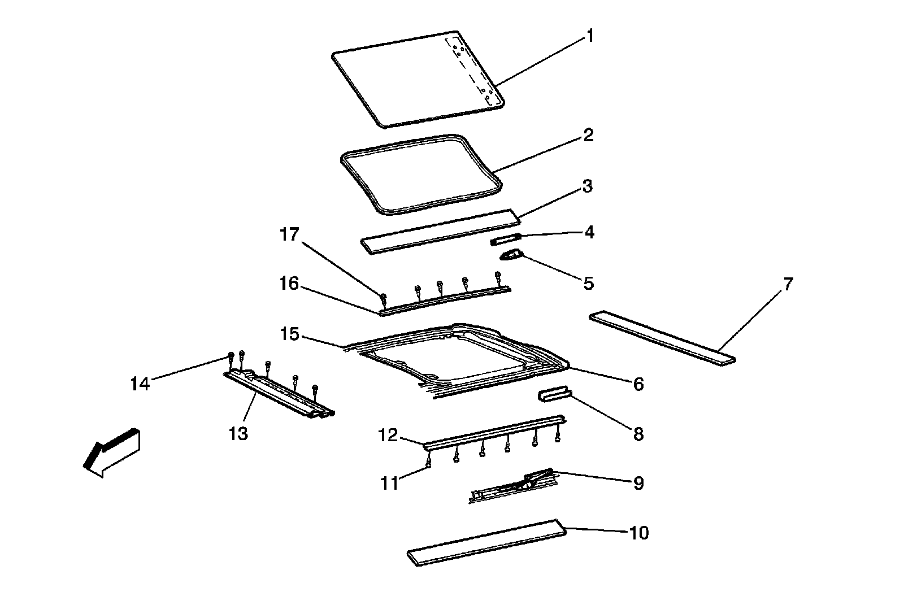
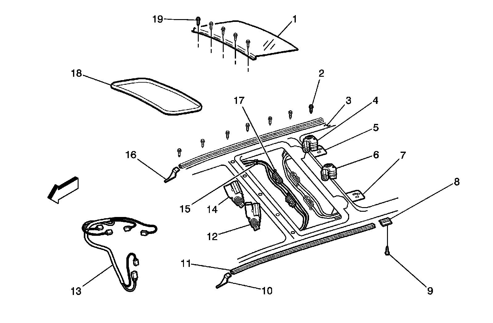
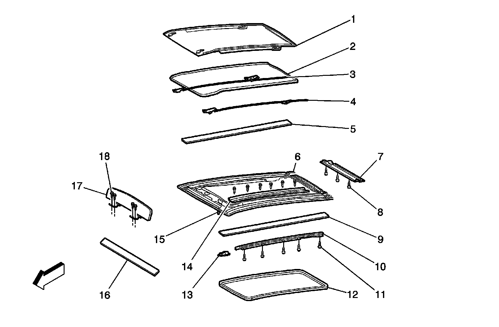

Power Sunroof Disassembled View
Power Sunroof Disassembled View
Rear Vent Window View

1 - Rear Window Panel
2 - Window Seal
3 - Trim Panel, Right Rear
4 - Rear Window Lift Arm Assembly
5 - Rear Window Cam Assembly
6 - Rear Sunroof Frame
7 - Trim Panel
8 - Rear Stationary Window Bracket
9 - Rear Window Cam Assembly
10 - Trim Panel
11 - Rear Track Assembly Screws
12 - Rear Track Assembly
13 - Rear Sunshade Assembly
14 - Rear Sunshade Assembly Screws
15 - Rear Finishing Lace
16 - Front Window Rear Track Assembly
17 - Front Window Rear Track Screws
Center Window View

1 - Sunroof Center Window Panel
2 - Sunroof Front Window Rear Track Screws
3 - Sunroof Frame
4 - Sunroof Rear Sunshade Motor/Actuator
5 - Sunroof Rear Vent Window Hinge Plate
6 - Sunroof Rear/Vent Window Motor/Actuator
7 - Sunroof Rear Vent Window Hinge Plate
8 - Sunroof Rear Track Extension
9 - Sunroof Rear Track Extension Screw
10 - Sunroof Rear Track Front Cam Extension
11 - Sunroof Rear Track Assembly
12 - Sunroof Front Sunshade Motor/Actuator
13 - Sunroof Wiring Harness
14 - Sunroof Front Window Motor/Actuator
15 - Sunroof Drive/Return Cable Tubes
16 - Sunroof Rear Track Front Cam Extension
17 - Sunroof Motor/Actuator Block
18 - Sunroof Window Seal
19 - Sunroof Center Window Screws
Front Window View

1 - Front Sunroof Window
2 - Front Sunroof Window Seal
3 - Front Sunroof Window Rear Cable Guide
4 - Front Sunroof Window Cable/Guide Assembly
5 - Right Front Trim Panel
6 - Sunroof Frame Assembly
7 - Sunroof Front Sunshade Assembly
8 - Sunroof Front Sunshade Assembly Screws
9 - Left Front Trim Panel
10 - Sunroof Front Sunshade Track Assembly
11 - Sunroof Front Sunshade Track Assembly Screws
12 - Sunroof Front Window Finish Lace
13 - Sunroof Front Sunshade Track Extension
14 - Sunroof Front Window Track
15 - Sunroof Frame Front Locator Pin
16 - Sunroof Front Trim Panel
17 - Sunroof Air Deflector
18 - Sunroof Air Deflector Screws